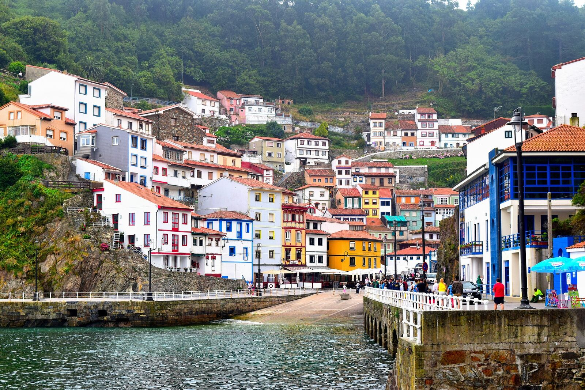
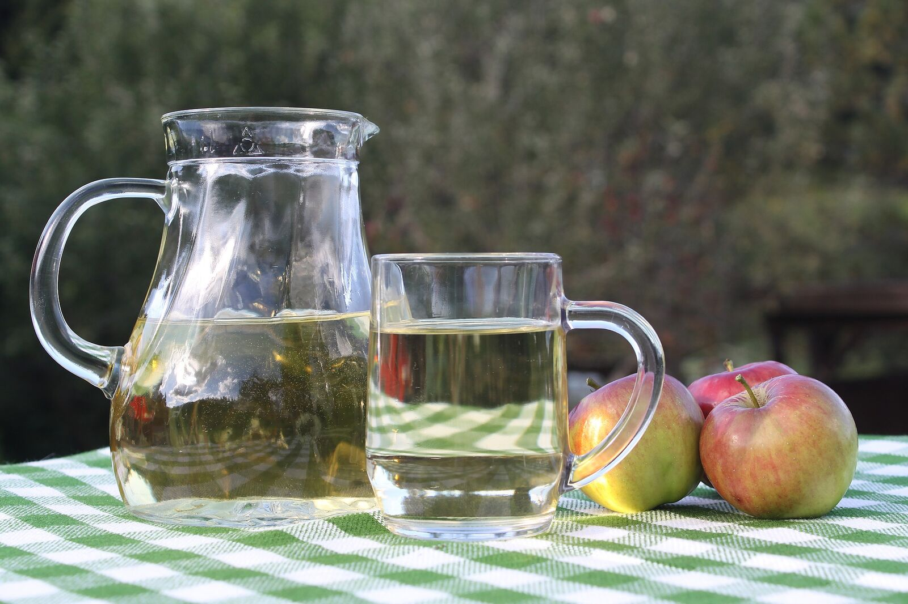

The Cantabrian Sea washes some four hundred kilometres of Asturian coast: a land of fishing families,
crossed by pilgrims for centuries, that has become a favourite holiday destination. Eighteen fishing
villages, more than two hundred beaches, watchtowers, cliffs and viewpoints line a shore carved by the
waves, with room for surfing, fishing, sailing, diving and hiking.
Don't miss:
The Bufones de Pría, sea spouts that blast water through the rock.
Cudillero, a village built like an amphitheatre over the sea.
Gulpiyuri, the inland beach.
Cape Peñas, the northernmost point of Asturias.
The Dinosaur Coast and the Jurassic Museum of Asturias.
The coastal path.
The oysters of the Eo estuary.
Lastres and Llanes, used as film sets.
Surfing beaches.
Cemeteries with unique sea views in Luarca and Niembro.

Cudillero, Asturias
Fishing tradition
Depending on the season, small boats unload sardines, hake, monkfish (pixín) or sea bream, and
shellfish such as velvet crabs, lobsters, sea urchins (oricios) and goose barnacles. Mending nets
and canning grew up around them. Visit a fish market (rula) to watch the auction before the
catch goes on sale, or one of the museums about the sea.
Traces of the past
Between Gijón and Ribadesella the rocks still keep dinosaur footprints. Local legends tell of sirens that
lured sailors with their song, of l'Home Marín, a merman roaming the coast, and of the
espumeros, small playful sea spirits.
Ribadesella
Lighthouses
Lighthouses stand where bonfires once guided the boats. From the cliffs of Cape Peñas you can see the
Avilés estuary and the port of Gijón on clear days. The estuaries of the Eo, Navia, Nalón, Avilés,
Villaviciosa, Ribadesella and Tina Mayor are also worth exploring.
Villaviciosa
Food
Food is one of the great pleasures of Asturias, and the restaurants along the coast make the most of
fresh local produce. Many traditional places carry quality labels such as "Mesas de Asturias" and
"Sidrerías de Asturias", and some hold Michelin stars.

Cider
All year round the seaside towns hold food festivals around fish and seafood, such as the elver festival
in L'Arena and the sardine festival in Candás, both of regional tourist interest.